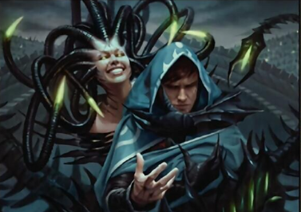
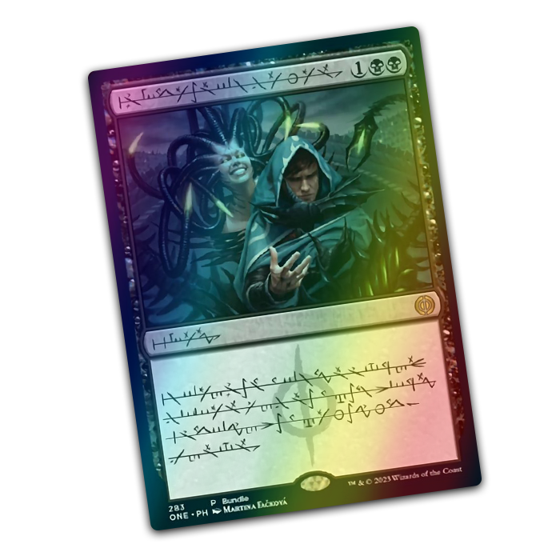

Jace Beleren (Phyrexian: auL, IPA: [ʤes]) es un caminante de planos humano completo y un mago mental de Vryn.
Es el antiguo Pacto entre Gremios Viviente de Rávnica y miembro fundador de Gatewatch. Fue completado durante
los eventos de Phyrexia: All Will Be One.